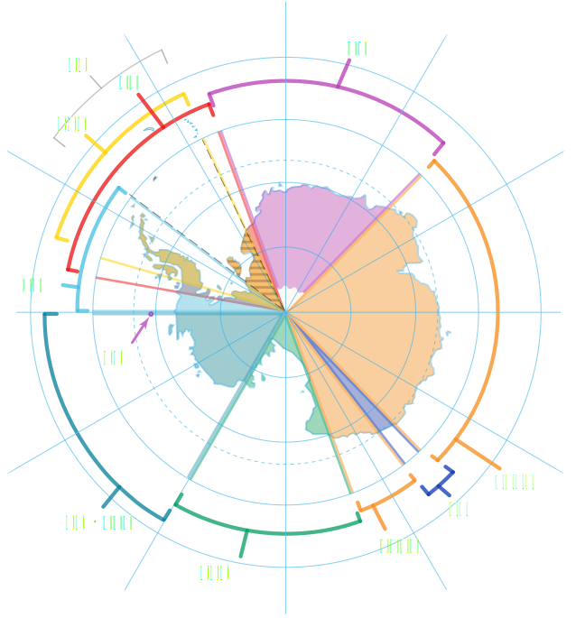

序曲：帆船时代与英雄时代
早在公元前4世纪，古希腊哲学家亚里士多德提就出了对于南极大陆的猜想。他在著作《天象论》中提及了“Antarctic region”的概念，并把它称为“未知的南方大陆”。
亚里士多德 “既然世界的北面有北极，那世界的另一面是不是也应该有南极呢？”亚里士多德
到了公元150年左右，希腊的天文学家和地理学家在绘制世界地图时，把这个“未知的南方大陆”标注在地图的最南端。但从那以后的千百年中，这块世界尽头的大陆就一直停留在人类的遐想之中。一直到16世纪，欧洲的探险大潮兴起，南极才又被人们提起。
随着大航海时代的来临，无数的远洋探险家探索着世界的南部边界。关于未知的南部大陆的虚拟远航故事，也潮涌般地出现在了17、18世纪的奇幻小说中。
18世纪末，英国航海传奇人物——库克船长带领着舰队实现了人类历史上首次穿过南极圈的壮举。但遗憾的是，他也并没有亲眼看见这片神秘的冰雪大陆。在过去的两千多年里，这片位于南方的土地，深深的吸引着人类对于远方的想象。
多次开展南极海域探险,但并未发现陆地
直至1895年，挪威探险家博尔赫格列文带领一个小型探险队探访南极海岸，遇到浮冰被困得不能动弹，挣扎着爬上了罗斯海入海口的陆地，才成为了事实上登陆南极的第一个人。那年冬天博尔赫格列文和他的队伍拼命捕杀海豹和企鹅果腹度日，成功在南极大陆越冬，也成为了第一个在南极度过冬季的人类。
随后的20年里，伴随着1895年8月第六届国际地理大会“无论以何种方式最有效促进南极探索事业”的呼吁，南极成为了世界各国探险家的乐园，争夺对南极的探索优先权成为了各个国家的南极战略。英国、法国、瑞典、挪威等一大批欧洲国家相继派出探险队对南极大陆展开攻势。
期间，1903年，威廉.斯佩尔斯.布鲁斯博士带领的苏格兰南极探险队前往南极，并成功的在南极大陆上建立了人类历史上第一个永久南极观测站；1904年到1909年莫森、戴维斯和麦凯首次到达当时为南纬72°24′，东经155°18′的南磁极；1911年12月14日和1912年1月17日挪威的阿蒙森和英国的斯科特率领的探险队先后到达南极点。
第一个征服南极点的探险者
至此，南极大陆被人类的先驱者所征服。这一时期中涌现出了大量可歌可泣的探险英雄，历史上也称南极的这一时期为“英雄时代”。而此前更早的探索时代，则因为大量远洋帆船的使用被称为“帆船时代”。
争夺：机械时代的话语权
星星之火（1904~1908）
1904年2月24日建成,阿根廷建立了人类历史上第一个南极科考站——奥长达斯站。该站位于南奥尼克群岛苏里岛的斯科舍湾。
四年之后，澳大利亚探险家埃奇沃思大卫，在南极建立了第一个人类营地——埃奇沃思大卫营。
在此后的多年，人类对于南极营地的建设陷入停滞。但是，这两颗星星之火却在三十多年后逐渐燃烧起来……
主权争夺（1908~1941）
1908~1941年，随着机械化交通工具的广泛应用，人类对南极的探索逐渐走进了机械时代。早前参与南极探险工作的七个国家：英国、澳大利亚、新西兰、法国、智利、阿根廷、挪威等国先后对南极大陆的特定区域提出主权要求，面积约占南极大陆总面积的83%。
英国和智利、阿根廷三国所宣称的南极主权土地甚至有大量重合，在南极地区利益分配的问题也成为世界各国新的矛盾点。
第一次高潮（1941~1957）
第二次世界大战时期，为了抢夺在南极的权益，英国于1943年秘密进行了“塔巴林”南极探索行动。作为回应，在1947年智利也开启了该国的第一次南极探险活动，同年，阿根廷、智利、英国三国在都宣称自己拥有主权的南极半岛上，相继建立了三座观测站，作为各自国家抢夺南极利益的关键点。
此后，以英国为代表的非南美国家，同智利、阿根廷等南美国家在南极利益问题上剑拔弩张。1952年，英国极地科考人员在乘坐船只试图恢复自己在霍普湾的基地时，甚至遭到了阿根廷军人的武力驱赶。
三国的争执也刺激了世界各国的神经，引起了在南极建立观测站的高潮。澳大利亚于1954年建立了Mawson站，法国于1956建成了Dumont d'Urville站。同年，美国和苏联两个超级大国也分别开启了两个观测站的建造项目，并在1956年末建造了McMurdo站和苏联的米尔尼站。
根据统计，截止1957年第三个国际极地年前，南极共有18个各类观测站，属于阿根廷、智利、英国三国占比超过72%。
《南极条约》时代（1957~1983）
由于在早前发现与探索时期的缺位，美国在南极的“主权宣誓”缺乏合理的理由。而南极争端的日益白热化，更让身处美苏冷战格局下的美国深感无力应对。
因此，借着1957-1958第三个国际极地年期间，与南极有关的12个国家在南极事务中建立的良好合作关系，1958年初，美国总统艾森豪威尔致函其他11国政府，邀请他们派代表到华盛顿共同商讨南极问题。
当年底，经过12国代表60多轮的谈判，12个国家签署以“南极和平利用与开发”为宗旨的《南极条约》，条约宣布“南极只能用于和平研究目的，冻结一切主权要求”，为长久以来的南极领土争端划上了句号。
在这一段时期内，科学研究和科学合作成为了南极开发的主要目标，以美苏两大强国为首，各国纷纷投入资源对南极地区进行科学性的探索，取得了很多科学性的成果。美国在南极点建立了阿蒙森-斯科特观测站（以此纪念首批征服南极点探险家的阿蒙森与斯科特），苏联则在南极最冷记录点建立了东方站，
第二次高潮（1983~至今）
自1958年《南极条约》签署，南极事务就被垄断在《南极条约》协商国之中，而随着20世纪诸多发展中国家的兴起，不少国家也希望在南极事务中掌握自己的话语权。在80年代中期，世界各国掀起了第二次在南极建站的高潮。
这一时期，巴西、韩国、印度等数十个非协商国相继签署《南极公约》，在南极建立自己的科考站，融入《南极条约》体系。“南极大陆由人类共同所有”的属性被进一步强调。
70年代末，中国相继与智利、澳大利亚等国以国际合作的形式，派遣科研人员参与到南极地区的科学考察过程当中。截止1983年，我国已经有35名科研人员参与到了他国的南极科考项目当中，并积累了一定的经验。
1983年，中国签署《南极条约》，第二年6月，中国成立了第一支南极考察队。1985年2月，中国在南极洲乔治岛上建立了中国南极长城考察站，同年10月7日中国获得《南极条约》协商国资格。此后中国相继于1989年2月26日在南极圈内的普里兹湾建立了中国南极中山考察站，于2009年1月27日在南极最高点冰穹A建成中国南极昆仑站，于2014年2月8日建成中国南极泰山站。
开发：平民时代的极地旅游
《南极条约》的签订为南极带来了和平和发展，大量的科学家以及科研设备被运抵南极，上百个科考站星罗密布在浩瀚的南极大陆上为来此的人提供着帮助与支持。在这样的条件下，南极不再只是科学家与冒险者的乐园，从20世界50年代开始，每年有500名左右的乘客乘坐智利和阿根廷海军船只前往南设得兰群岛的研究站游玩。到了80年代后期，已经有四家公司在南汽地区进行船载旅游服务，同时还有一家陆地旅游运营商。
1991年，为了更好地执行当年签订的《南极关于环境保护的南极条约议定书》，保护南极的生态不受到游客影响，7家公司在南极地区提供旅游服务的公司成立了国际南极旅游组织协会，统一管理日益增多的南极地区的商业旅游活动。到目前全球已经有数百个商业旅行公司加入IAATO，同程旅游于2018年加入该组织成为中国第一家加入IAATO的商业公司。
来源：Youtobe新华视频频道
结语
2018年11月2日，中国史上最大规模的第35次南极科学考察队乘坐“雪龙号”从位于上海的中国极地考察国内基地码头出发，向南极再次出征。这次科考队共包含80多个单位的351名队员，将前往南大洋海冰最复杂的地区开展科学考察，并6次穿越“魔鬼”西风带，并在陆地、海洋、冰盖等区域上同时作业。
而这一切正如第一个征服南极点的挪威探险家阿蒙森所说：“其实谁第一个到达南极点，对于人类并不重要，重要的是面对自然，人类要用激情、要用雄心壮志去点燃热情的火焰，去做那种获得成功的概率很小或要付出极大代价的事。”